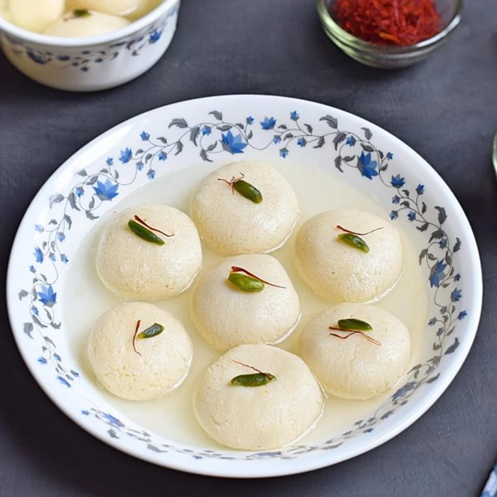

Rasgulla is a traditional sweet that is usually served at the end of a meal, like many other Indian milk-based desserts. It is prepared from chhena paneer dumplings and semolina dough, cooked together in a sugary syrup. The origin of rasgulla is the subject of a heated debate, with West Bengal and Odisha both claiming to be the birthplace of the dessert.
Meal prep time : 1 hour 40 minutes
Servings : 17